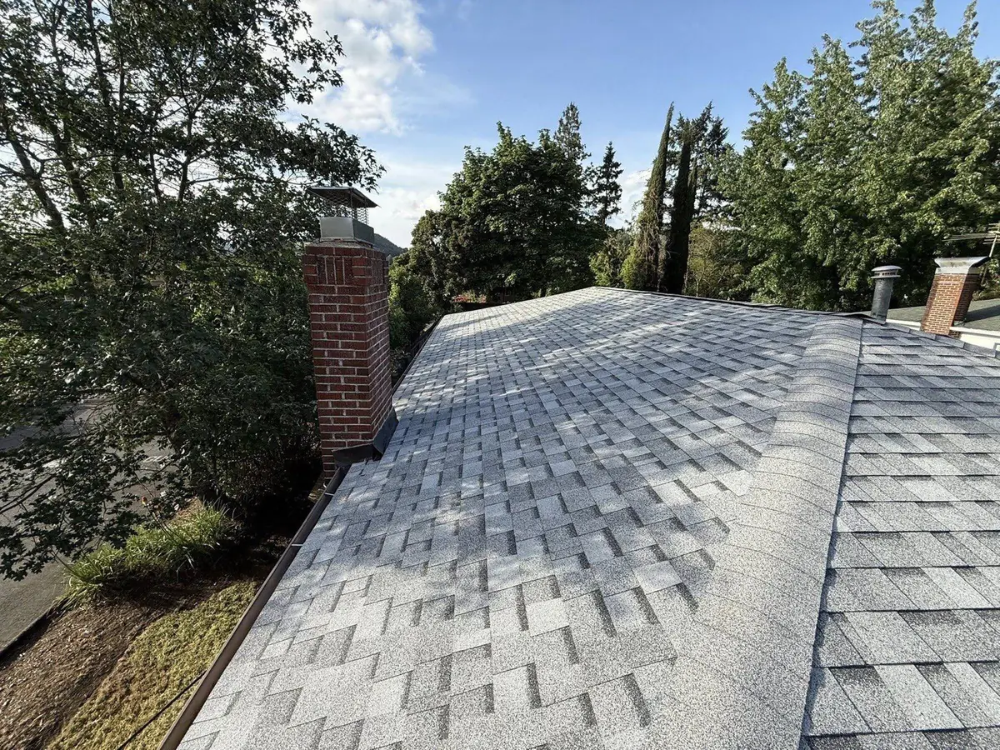

Techos y Construcción · Roseburg y el Condado de Douglas
Techos y construcción en Roseburg y el condado de Douglas.
Somos una empresa familiar con base en Riddle, a 20 minutos de Roseburg por la I-5. Reemplazamos, reparamos y cuidamos techos por todo el condado de Douglas, construidos para aguantar las 33 pulgadas de lluvia al año del Valle del Umpqua. Atención en español, precios honestos y trabajo local de verdad.
Atención en Español
Un techador local, no una franquicia de Eugene.
⚡ Respuesta rápida
Mistletoe Construction es una empresa familiar de techos y construcción en Riddle, Oregón (CCB #255729), a unos 20 minutos de Roseburg. Servimos a todo el condado de Douglas en inglés y en español: reemplazo de techo, reparación de techo, remoción de musgo, techos de metal, canaletas, revestimiento y más. Ahora mismo: $500 de descuento en cada techo nuevo más canaletas gratis para toda la casa en techos que califican de $20,000 o más. Empiece con el Estimado Instantáneo o llame al (541) 670-5005.
Muchas familias en Roseburg y el condado de Douglas prefieren tratar con un contratista que hable su idioma y que viva en la misma región. Nosotros no somos una de las compañías de Eugene que anuncian "techos en Roseburg" desde una hora al norte. Vivimos aquí, trabajamos aquí y cuando cae una tormenta en el Valle del Umpqua ya estamos cerca. Le explicamos cada paso, cada material y cada número en español claro, sin letra chica.
El clima del Valle del Umpqua es duro con los techos por partes iguales: caen alrededor de 33 pulgadas de lluvia entre octubre y mayo, y luego julio y agosto pegan con más de 90 °F casi sin una gota. Ese vaivén de mojado a seco envejece el asfalto más rápido que en un clima seco, y la sombra de los robles y abetos Douglas deja crecer musgo en los lados norte del techo. Por eso conviene un techador que conozca de verdad esta zona.

Nuestros Servicios
Todo lo que su casa necesita, en un solo equipo.
El mismo equipo familiar para el techo y para el resto de la casa. Estas son las páginas en español; el resto del sitio está en inglés.
Servicios de Techado
Vea todo lo que hacemos en techos: reemplazo, reparación, metal, musgo y más.
Ver más → TechosReemplazo de Techo
Tejas arquitectónicas Owens Corning, arranque completo, permisos incluidos.
Ver más → TechosReparación de Techo
Goteras, daño por tormenta y tejas faltantes, reparadas con prueba en fotos.
Ver más → TechosRemoción de Musgo
Limpieza y prevención segura para las calles sombreadas de Roseburg.
Ver más → TechosTechos de Metal
Techos de metal duraderos y resistentes al fuego para el condado de Douglas.
Ver más → MembresíaMembresía de Cuidado del Hogar
Inspecciones durante todo el año y servicio prioritario desde $49/mes.
Ver más →
Cómo Trabajamos
Estimado claro, trabajo limpio, respuesta honesta.
Cuando nos llama, subimos al techo, fotografiamos todo y le entregamos números reales: el nombre de la línea de tejas, la base impermeable, el plan de los tapajuntas (flashing) y los términos de la garantía. Si un reparación puntual es la respuesta honesta, eso le decimos, no le vendemos un techo entero que no necesita.
- Inspección gratis y presupuesto por escrito — números reales, sin sorpresas.
- Permisos incluidos — tramitamos el permiso del condado de Douglas y coordinamos las inspecciones.
- Arranque completo — el condado no permite poner tejas nuevas sobre las viejas, así que quitamos todo hasta la madera.
- Limpieza total — barrido magnético de clavos, acarreo completo y recorrido final con usted.
La mayoría de las casas se terminan en uno a tres días una vez que llegan los materiales. Trabajamos alrededor de las ventanas de buen clima, incluso en la temporada de lluvia.
La Oferta de Hoy
$500 de descuento y canaletas gratis.
Ahora mismo descontamos $500 de cada techo nuevo, y en los techos que califican de $20,000 o más incluimos canaletas gratis para toda la casa. Pregunte por la oferta cuando lo visitemos, o vea qué recibe su techo con el Estimado Instantáneo.
Dónde Trabajamos
Servimos a todo el condado de Douglas.
Desde nuestro taller en Riddle llegamos a toda la región del Umpqua. Roseburg es nuestro mercado más ocupado.
Preguntas Frecuentes
Preguntas frecuentes (en español)
¿Atienden en español en Roseburg y el condado de Douglas?
Sí. Atendemos a familias de habla hispana en Roseburg, Winston, Sutherlin, Green, Myrtle Creek, Riddle y todo el condado de Douglas. Llame o escriba al (541) 670-5005 y con gusto le damos un estimado gratis en español.
¿Cuánto cuesta un techo nuevo en Roseburg?
La mayoría de los reemplazos de tejas asfálticas cuestan aproximadamente entre $10,000 y $25,000 con arranque completo; el metal suele costar de 2 a 3 veces más. El tamaño, la inclinación y el estado de su techo definen el precio. Ahora mismo hay $500 de descuento más canaletas gratis en techos que califican. Vea la guía de costos de Roseburg (en inglés) para el desglose completo.
¿Están licenciados y asegurados?
Sí. Estamos licenciados en Oregón como CCB #255729 y contamos con seguro. Somos contratistas de Owens Corning. Puede verificar cualquier contratista de Oregón; nuestra guía para verificar contratistas explica cómo (en inglés).
¿Qué tan rápido responden a una gotera?
Estamos a unos 20 minutos por la I-5 y damos prioridad a las goteras activas. Los miembros del plan de Cuidado del Hogar reciben respuesta de emergencia al frente de la fila, con lona incluida. Llame o escriba al (541) 670-5005 y mándenos fotos si puede.
Protejamos su hogar juntos.
Estimados gratis de sus vecinos en Riddle: respuestas honestas y trabajo local, en español. $500 de descuento más canaletas gratis en techos que califican.